Bandua offloads your camera cards to one or more drives at the same time. It checks every copy against the source with a hash. It then writes a PDF report, a log, an MHL file and a JSON file, to hand over to the editor, the production or the lab.
The rule is simple: never format a card on the strength of a progress bar. Bandua only calls a card "verified" once every file has been read back from every destination drive and compared with the original.
Bandua is free, open source (MIT License), and needs no account or license key.
The app is not signed yet, so your system shows a warning, only once:
Windows: click "More info", then "Run anyway".
macOS: right-click the app, choose "Open", then confirm.
Your browser may also flag the download as unusual. This is common for a new, unsigned app. Keep the file from the downloads panel. If in doubt, have it scanned on VirusTotal.
Welcome window
On first launch, Bandua shows a disclaimer (1). Read it, then click I understand and accept (2). You can find it again under About (the i button).
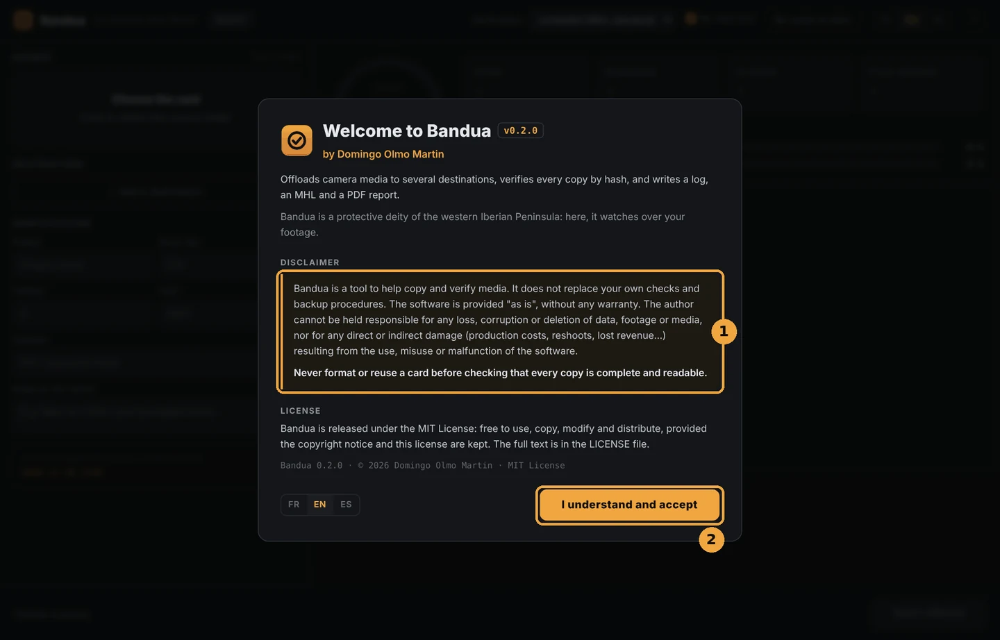
3. The interface at a glance
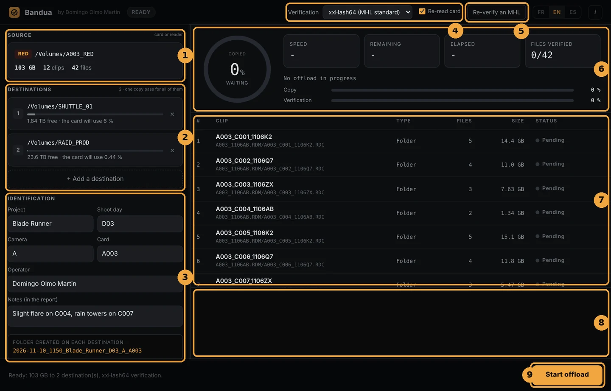
Source: the card to offload, with its brand, size, number of clips and files.
Destinations: the drives that will receive a copy, with their free space.
Identification: project, shoot day, camera, card, operator, notes, and a preview of the name of the folder that will be created.
Verification: the hash algorithm and the Re-read card checkbox.
Re-verify an MHL: checks a folder that has already been copied (see section 7).
Dashboard: the progress ring, the counters (Speed, Remaining, Elapsed, Files verified), the current file and the copy and verification bars.
Clip list of the card, with the status of each clip.
Log: the live journal.
Main button: Start offload, then Cancel, then New offload or Retry this card. A message on its left sums up the current state.
At the top, the badge next to the app name shows the state: Ready, Copying, Verifying, Verified, Errors, Cancelled. The FR / EN / ES buttons switch the interface language instantly.
4. Offloading a card, step by step
Step 1: choose the source
Click the Source box ("Choose the card") and select the card, or the folder that stands for it.
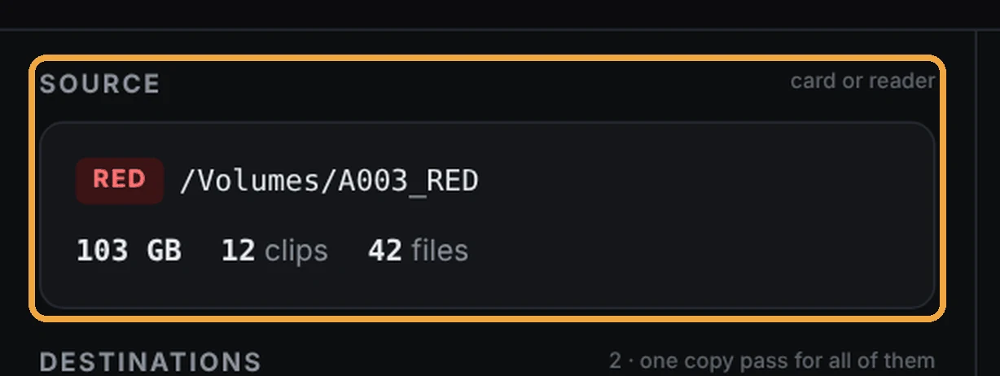
Bandua scans the card and shows:
- the recognised brand (RED, ARRI, Blackmagic, Sony, Canon, GoPro, DJI, or "Générique" for anything else);
- the number of clips and files, and the total size;
- the clip list in the table on the right, marked Pending.
If no video clip is recognised, Bandua says so, but still copies every file on the card.
Step 2: add the destinations
Click + Add a destination (2) and pick a folder on your first drive. Repeat for every copy you need (usually two drives, sometimes three).
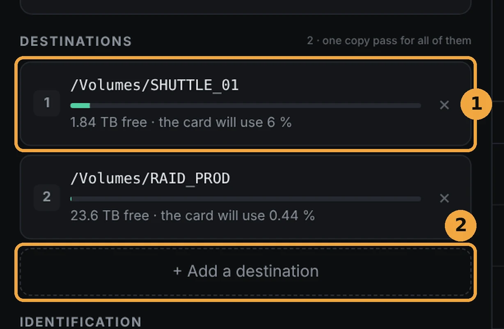
For each destination (1), Bandua shows:
- the free space and the share the card will take;
- a green gauge, which turns red with NOT ENOUGH SPACE if the card does not fit.
The card is read only once to feed every destination, so adding drives does not multiply the card read time.
To remove a destination, click the cross on its right. Bandua refuses a destination that is the source itself, or a folder already chosen.
Step 3: identify the card
Fill in the Identification section:
Field
Example
Note
Project
Blade Runner
kept from one session to the next
Shoot day
D03
kept
Camera
A
kept; filled in automatically if empty
Card
A003
filled in automatically from the clip names
Operator
name of the DIT or assistant
kept
Notes
"Slight flare on C004, rain towers on C007"
shown in the report
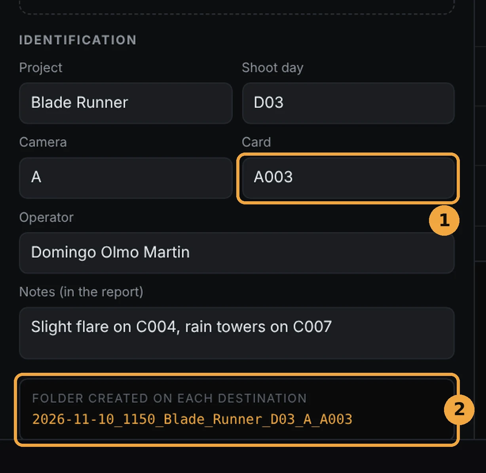
The card number (1) comes from the clip names (for example A003_C001… gives card A003 and camera A). Check it anyway.
Below these fields (2), Bandua shows live the name of the folder that will be created on each destination:
2026-11-10_1142_Blade_Runner_D03_A_A003
That is: date and start time, then project, day, camera and card. Empty fields are simply left out. If a folder with the same name already exists, Bandua adds _2, _3 and so on, and never overwrites anything.
Step 4: set the verification (optional)
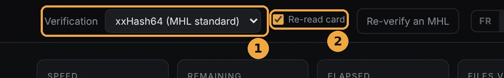
Algorithm (1):
xxHash64 (MHL standard): the default and recommended choice. Fast, and understood by post-production software.
XXH3-64 (faster): even faster on recent machines.
MD5 or SHA-1: slower, only when a lab or a production asks for them.
Re-read card (2): Bandua reads the card a second time and compares both reads. It is slower, but it catches a failing card reader, cable or card. Keep it ticked unless you are really in a hurry.
Step 5: start
The message at the bottom (1) sums up the job, for example: "Ready: 103 GB to 2 destination(s), xxHash64 verification." Click Start offload (2).
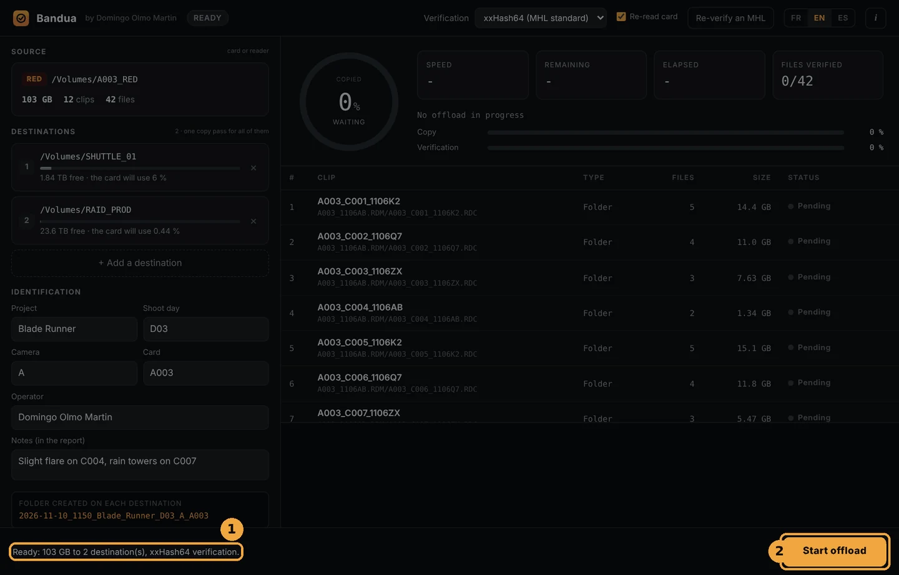
During the offload, do not remove the card or the drives.
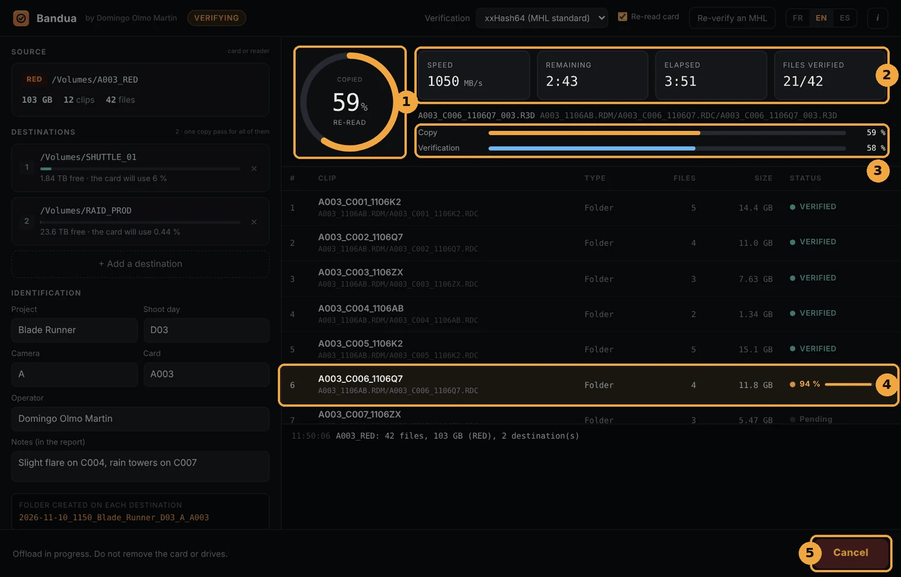
The ring shows how much of the card has been copied (like the orange bar), with a word under the percentage: copy, re-read, verify, then wait during the final checks.
The counters show speed, time remaining, time elapsed and the number of verified files.
The bars track copy and verification separately.
The current clip is highlighted, with its own progress. Each clip then turns VERIFIED (green) or ERROR (red).
The button becomes Cancel (see section 8).
Step 6: read the result
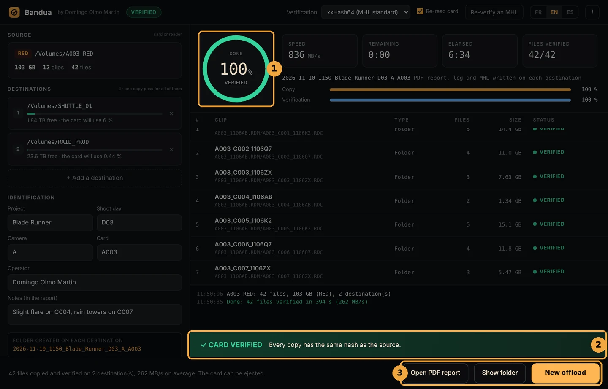
All good:
1. the ring turns green and reads verified; the badge at the top reads Verified;
2. the ✓ CARD VERIFIED banner shows for a few seconds: every copy has the same hash as the source;
3. three buttons appear: Open PDF report, Show folder and New offload.
The message at the bottom confirms the number of files and destinations and the average speed, then says the card can be ejected. Clicking a destination opens the copied folder on that drive.
Something went wrong: the ring turns red and a ✕ ERRORS DETECTED banner appears. Read the log and the clip list before touching the card, and do not format it. See section 8.
Step 7: next card
Click New offload. The destinations and the project info (project, day, camera, operator) are kept. Only the card and the notes are cleared. Just choose the next card.
5. What Bandua does during the copy
All of this happens in the background, with nothing for you to set. It is what makes the green ring worth trusting.
Safe copy. Each file is first written under a temporary name (.bandua-part). It only gets its real name once verified. A file with its final name is therefore a checked file.
Verification on the drive, not in memory. The copy is read back from the destination drive with the system cache bypassed. It really is the drive that gets checked, not a copy still sitting in RAM. If a volume refuses the bypass, the log and the PDF say so.
Size checked. A file that is too short or too long counts as an error.
Card read twice (if Re-read card is ticked). If the two reads differ, the copies concerned are marked .HASH_ERREUR.
Card watched. The size and date of every file are checked before and after its copy, then the whole card is listed again at the end. A file that changes, appears or disappears fails the offload. This stops you formatting a card that was still being written to, or changed by another program.
Exact copy. The card's folder structure is kept as is (RED .RDM / .RDC, ARRIRAW, MXF, ProRes, BRAW and so on), and the original modification dates are preserved.
System files skipped. Files added by computers (.DS_Store, .Spotlight-V100, .Trashes, .fseventsd, System Volume Information, $RECYCLE.BIN, Thumbs.db, desktop.ini, macOS ._ files) are not copied.
6. Reports
In each dated folder, on each destination, Bandua writes four files, in the interface language:
File
Use
<folder>_report.pdf (_rapport.pdf in French, _informe.pdf in Spanish)
The document to hand over: project, card, camera, operator, notes, checks performed, clip list with status, algorithm, result.
<folder>_log.txt
The detailed journal, file by file, with hashes. Useful when in doubt or in a dispute.
<folder>.mhl
The list of hashes in MHL 1.1 format, readable by Silverstack, ShotPut Pro, Hedge… This is the file that lets you re-verify the folder later.
<folder>.json
The same information in a format a script or another program can use.
In the report, clips are grouped by brand: a RED .RDC folder counts as one clip, an ARRIRAW folder as one clip, a .braw as one clip, and so on.
7. Re-verifying a folder from its MHL
This checks that a folder you copied earlier is still intact:
- before formatting a card, if the copy is not fresh;
- when you deliver a drive to the editor or the lab;
- when a drive arrives, or after it has been shipped.
How to:
1. Click Re-verify an MHL in the top bar.
2. Choose the .mhl file of the dated folder.
3. Bandua reads every file back and compares it with the hash stored in the MHL. You get the same dashboard as for an offload (progress, speed, status of each clip). You can cancel at any time.
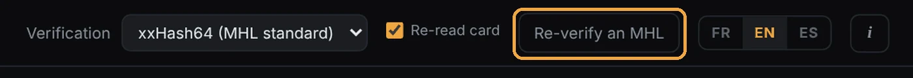
Possible statuses:
- VERIFIED: the file matches the MHL;
- DAMAGED: the hash differs, the file has changed or is corrupted;
- MISSING: the file listed in the MHL no longer exists.
Result:
- ✓ FOLDER INTACT: every file matches the MHL;
- otherwise, the clip at fault is marked (1) and a red banner (2) gives the number of missing and damaged files, with a reminder: do not format the original card.
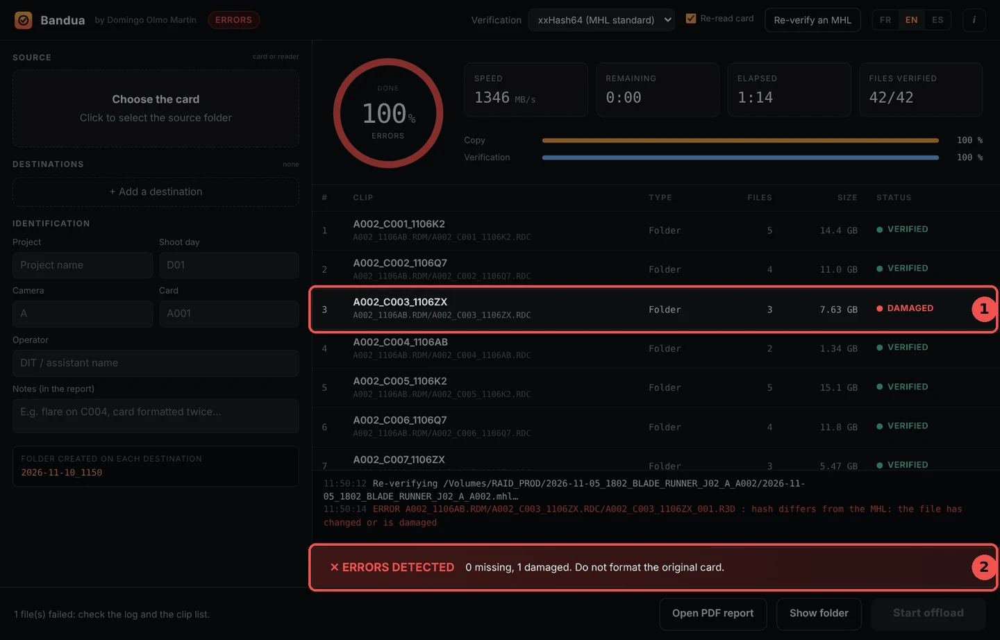
Files that are in the folder but not in the MHL (added later) are listed in the log, but not verified.
Bandua writes a time-stamped re-verification PDF report and log next to the MHL, for example <folder>_reverification_2026-11-10_143012.pdf. The original MHL is never changed.
Checking an MHL with Bandua MHL Companion
People who receive the footage (editor, assistant editor, lab, production) do not need Bandua to check an MHL. They can use Bandua MHL Companion, a free and simpler app made only for that.
Just drop the footage folder on its window: it finds every MHL inside, reads every file back and compares it with the stored hash. It tells you clearly whether the footage is intact or which clip has a problem, and can export a text report to send back to the production or the DIT. It reads Bandua's MHL files, and also those written by Silverstack, ShotPut Pro, Hedge and other tools (MHL 1.1 and ASC MHL). It is read-only: it copies nothing and changes no file.
Bandua MHL Companion is available for Windows and macOS on the Releases page of its GitHub repository.
8. Cancelling and errors
Cancelling
Click Cancel, then Confirm cancel within three seconds (two clicks, to avoid cancelling by accident). Bandua stops cleanly and leaves no .bandua-part file behind. The ✕ CANCELLED banner reminds you not to format the card.
When something goes wrong
What you see
What it means
What to do
Clip in ERROR, .HASH_ERREUR file on the destination
The copy does not match the source, or the two card reads differ.
Read the log. Try another reader or cable, then Retry this card.
"The card changed during the offload"
A file was changed, added or deleted on the card during the job.
Do not format. Make sure no other program is using the card, then run it again.
NOT ENOUGH SPACE on a destination
The card does not fit on that drive.
Free up space or choose another drive. Bandua will not start until this is fixed.
"Cannot read" on the source
The card or the reader is not responding.
Reinsert the card, change readers.
Retry this card runs the same card again with the same settings. A new folder is created (with a _2 suffix if needed), and faulty copies stay easy to spot thanks to their .HASH_ERREUR extension.
9. Good practice on set
Always at least two copies, on two physically separate drives.
Wait for the green ring and "Verified" before ejecting, let alone formatting.
Format the card in the camera, never on the computer.
Keep "Re-read card" ticked: most losses come from a faulty reader or cable, not from the card itself.
Fill in the notes: incidents, card formatted twice, clip cut short… The editor will thank you.
Re-verify from the MHL before delivering a drive.
Do not open the card in any other program during the offload (media browser, editing software…).
10. FAQ
How long does it take?
The time to read the card, plus verification. With "Re-read card", count roughly one more card read. The bottleneck is usually the card reader or the slowest drive.
Can I use Bandua with a camera that is not listed?
Yes. Every card is copied in full. Only the clip grouping in the report will be simpler (labelled "Générique").
My editor uses Silverstack, ShotPut or Hedge. Can they read my MHL files?
Yes, MHL 1.1 with xxHash64 is the standard these tools read. They can also use the free Bandua MHL Companion.
Does Bandua run on Linux?
Not for now. The code stays compatible, but there is no Linux build until it can be tested.
Does Bandua send data over the Internet?
No. Everything happens on your computer.
11. Disclaimer and license
Bandua is a tool to help copy and verify media. It does not replace your own checks or backup procedures. The software is provided "as is", without any warranty. The author cannot be held responsible for any loss, corruption or deletion of data, footage or media, nor for any direct or indirect damage resulting from the use, misuse or malfunction of the software.
Never format or reuse a card before checking that every copy is complete and readable.
Bandua décharge vos cartes caméra vers un ou plusieurs disques en même temps. Il vérifie chaque copie par rapport à la source grâce à un hash. Il produit ensuite un rapport PDF, un log, un fichier MHL et un fichier JSON, à transmettre au monteur, à la production ou au labo.
Le principe est simple : on ne formate jamais une carte sur la foi d'une barre de progression. Bandua ne déclare une carte « vérifiée » qu'une fois chaque fichier relu depuis chaque disque de destination et comparé à l'original.
Bandua est gratuit, open source (licence MIT) et ne demande ni compte ni licence.
L'application n'est pas encore signée. Votre système affiche donc un avertissement, une seule fois :
Windows : cliquez sur « Informations complémentaires », puis sur « Exécuter quand même ».
macOS : faites un clic droit sur l'application, choisissez « Ouvrir », puis confirmez.
Il arrive aussi que le navigateur signale le téléchargement comme inhabituel. C'est courant pour une application récente qui n'est pas signée. Gardez le fichier depuis le panneau des téléchargements. En cas de doute, faites-le analyser sur VirusTotal.
Fenêtre de bienvenue
Au premier lancement, Bandua affiche un avertissement de non-responsabilité (1). Lisez-le, puis cliquez sur J'ai compris et j'accepte (2). Vous le retrouverez ensuite dans À propos (le bouton i).
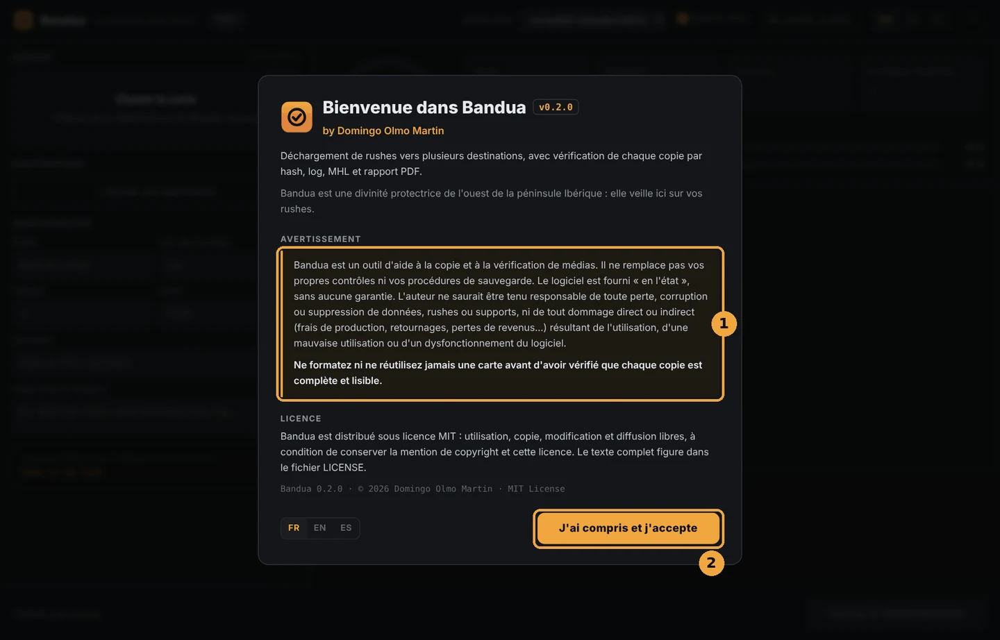
3. L'interface en un coup d'œil
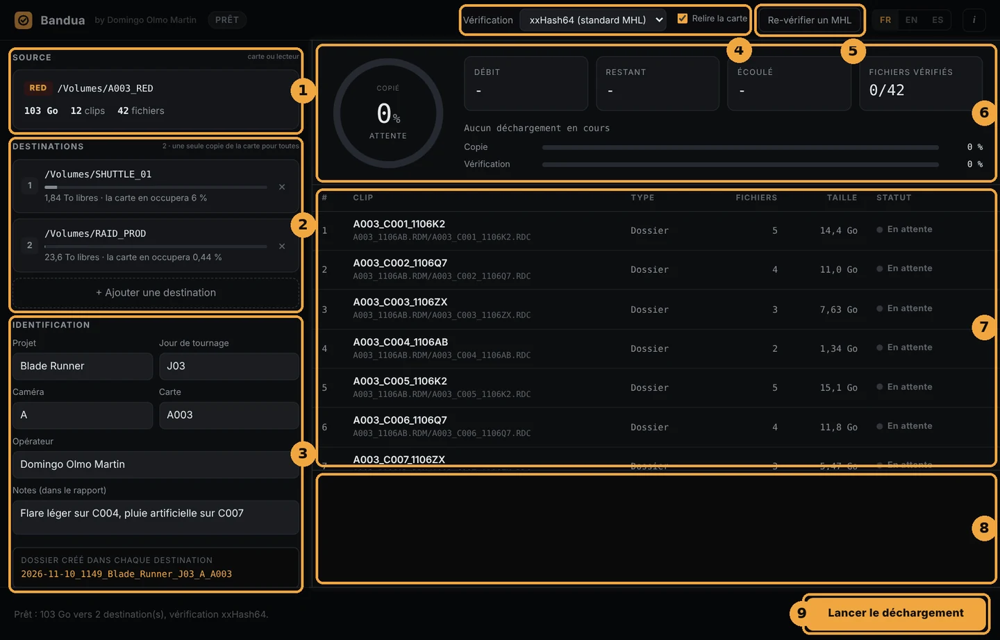
Source : la carte à décharger, avec sa marque, sa taille, son nombre de clips et de fichiers.
Destinations : les disques qui recevront une copie, avec leur espace libre.
Identification : projet, jour de tournage, caméra, carte, opérateur, notes, et l'aperçu du nom du dossier qui sera créé.
Vérification : l'algorithme de hash et la case Relire la carte.
Re-vérifier un MHL : le contrôle d'un dossier déjà copié (voir la section 7).
Tableau de bord : le cercle de progression, les compteurs (Débit, Restant, Écoulé, Fichiers vérifiés), le fichier en cours et les barres de copie et de vérification.
Liste des clips de la carte, avec le statut de chacun.
Log : le journal en direct.
Bouton principal : Lancer le déchargement, puis Annuler, puis Nouveau déchargement ou Relancer cette carte. À sa gauche, un message résume l'état.
En haut, la pastille à côté du nom de l'application indique l'état : Prêt, Copie en cours, Vérification, Vérifié, Erreurs, Annulé. Les boutons FR / EN / ES changent la langue de l'interface immédiatement.
4. Décharger une carte, pas à pas
Étape 1 : choisir la source
Cliquez sur le cadre Source (« Choisir la carte ») et sélectionnez la carte, ou le dossier qui la représente.
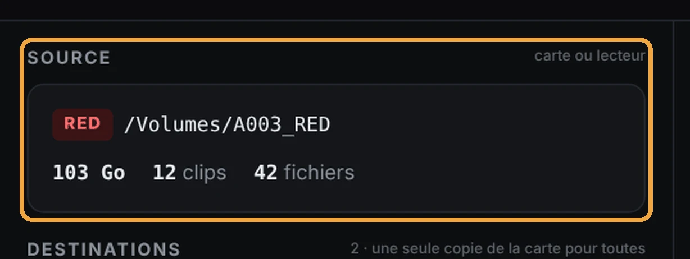
Bandua analyse alors la carte et affiche :
- la marque reconnue (RED, ARRI, Blackmagic, Sony, Canon, GoPro, DJI, ou « Générique ») ;
- le nombre de clips, de fichiers, et la taille totale ;
- la liste des clips dans le tableau de droite, au statut En attente.
Si aucun clip vidéo n'est reconnu, Bandua l'indique, mais copie tout de même tous les fichiers de la carte.
Étape 2 : ajouter les destinations
Cliquez sur + Ajouter une destination (2) et choisissez un dossier sur votre premier disque. Recommencez pour chaque copie voulue (en général deux disques, parfois trois).
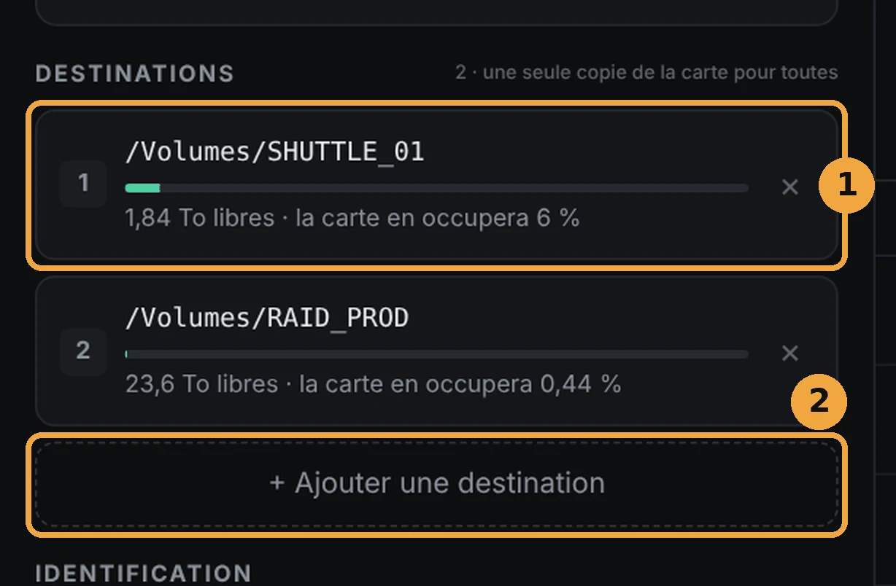
Pour chaque destination (1), Bandua affiche :
- l'espace libre et la part que la carte va occuper ;
- une jauge verte, qui passe au rouge avec la mention ESPACE INSUFFISANT si la carte ne rentre pas.
La carte n'est lue qu'une seule fois pour alimenter toutes les destinations. Le nombre de disques ne multiplie donc pas le temps de lecture de la carte.
Pour retirer une destination, cliquez sur la croix à sa droite. Bandua refuse une destination identique à la source, ou un dossier déjà choisi.
Étape 3 : identifier la carte
Remplissez la section Identification :
Champ
Exemple
Remarque
Projet
Blade Runner
conservé d'une session à l'autre
Jour de tournage
J03
conservé
Caméra
A
conservé ; rempli automatiquement si vide
Carte
A003
rempli automatiquement d'après les noms de clips
Opérateur
nom du DIT ou de l'assistant
conservé
Notes
« Flare léger sur C004, pluie artificielle sur C007 »
apparaissent dans le rapport
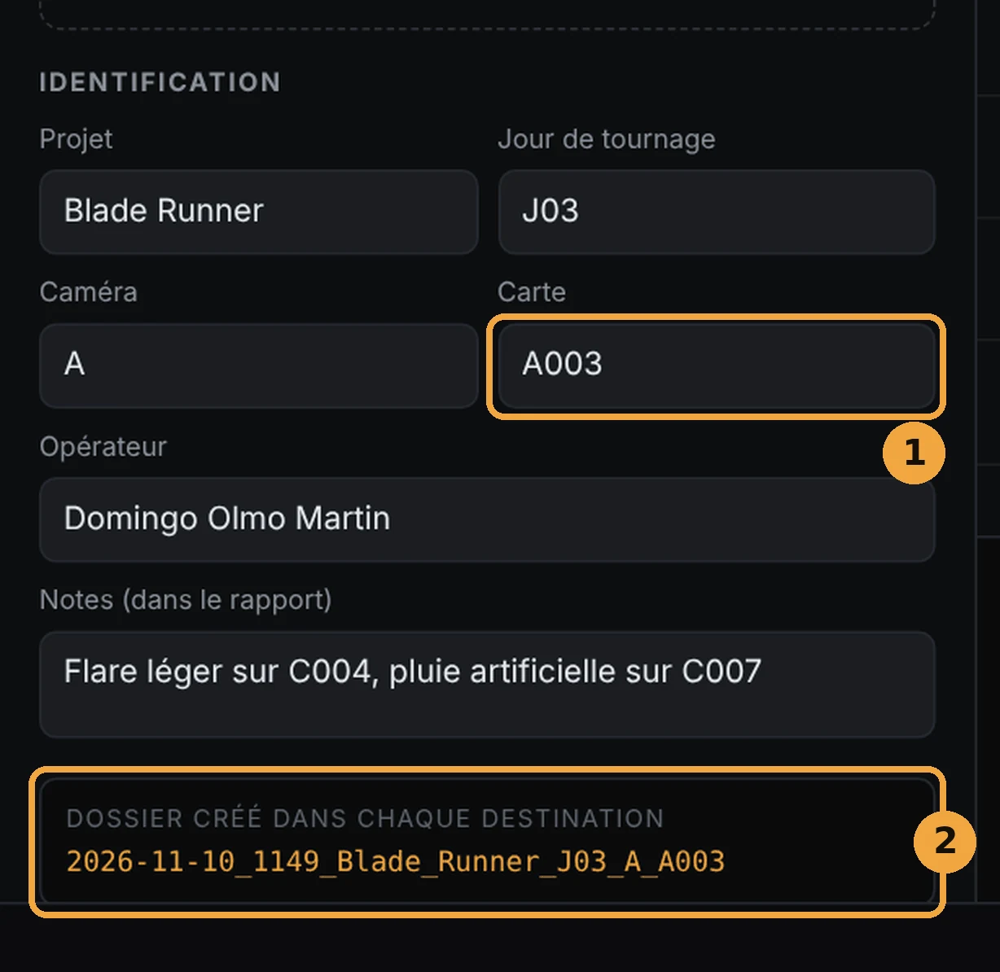
Le numéro de carte (1) se déduit des noms de clips (par exemple A003_C001… donne la carte A003 et la caméra A). Vérifiez-le quand même.
Sous ces champs (2), Bandua affiche en direct le nom du dossier qui sera créé dans chaque destination :
2026-11-10_1141_Blade_Runner_J03_A_A003
C'est-à-dire : date et heure du début, puis projet, jour, caméra et carte. Les champs vides sont simplement omis. Si un dossier du même nom existe déjà, Bandua ajoute _2, _3, etc., et n'écrase jamais rien.
Étape 4 : régler la vérification (facultatif)
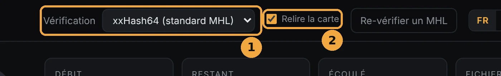
Algorithme (1) :
xxHash64 (standard MHL) : le choix par défaut, recommandé. Rapide, et reconnu par les logiciels de post-production.
XXH3-64 (plus rapide) : encore plus rapide sur les machines récentes.
MD5 ou SHA-1 : plus lents, à réserver aux cas où un labo ou une production les exige.
Relire la carte (2) : Bandua lit la carte une seconde fois et compare les deux lectures. C'est plus lent, mais cela permet de repérer un lecteur de cartes, un câble ou une carte qui flanche. Gardez cette option cochée, sauf urgence réelle.
Étape 5 : lancer
Le message en bas (1) résume l'opération, par exemple : « Prêt : 103 Go vers 2 destination(s), vérification xxHash64. » Cliquez sur Lancer le déchargement (2).
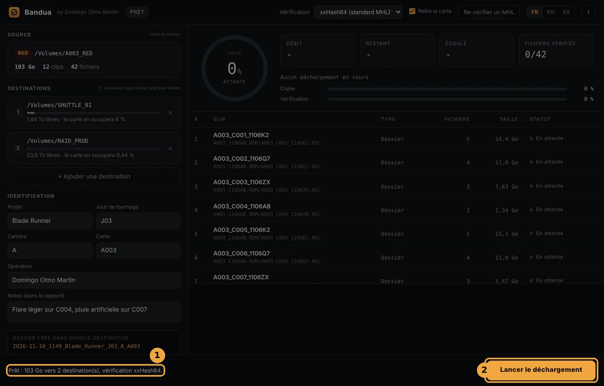
Pendant le déchargement, ne retirez ni la carte ni les disques.
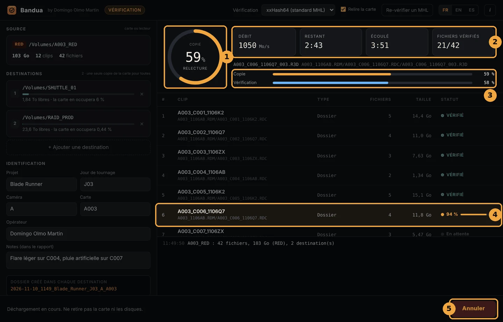
Le cercle indique la part de la carte déjà copiée (comme la barre orange), avec un mot sous le pourcentage : copie, relecture, vérification, puis patientez pendant les derniers contrôles.
Les compteurs donnent le débit, le temps restant, le temps écoulé et le nombre de fichiers vérifiés.
Les barres suivent séparément la copie et la vérification.
Le clip en cours est surligné, avec sa propre progression. Chaque clip passe ensuite à VÉRIFIÉ (vert) ou ERREUR (rouge).
Le bouton devient Annuler (voir la section 8).
Étape 6 : lire le résultat
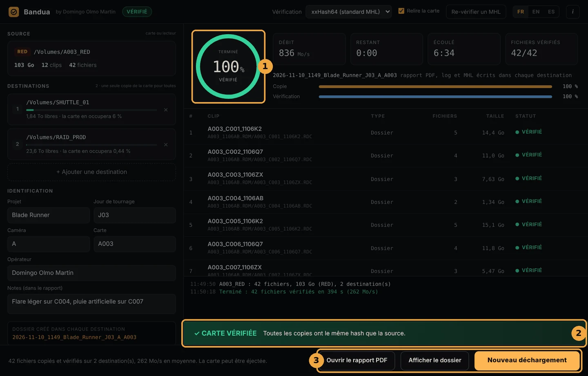
Tout est bon :
1. le cercle passe au vert, avec la mention vérifié ; la pastille en haut indique Vérifié ;
2. le bandeau ✓ CARTE VÉRIFIÉE s'affiche quelques secondes : toutes les copies ont le même hash que la source ;
3. trois boutons apparaissent : Ouvrir le rapport PDF, Afficher le dossier et Nouveau déchargement.
Le message du bas confirme le nombre de fichiers, de destinations et le débit moyen, puis indique que la carte peut être éjectée. Un clic sur une destination ouvre directement le dossier copié sur ce disque.
Un problème est survenu : le cercle passe au rouge et un bandeau ✕ ERREURS DÉTECTÉES apparaît. Consultez le log et la liste des clips avant de toucher à la carte, et ne la formatez pas. Voir la section 8.
Étape 7 : carte suivante
Cliquez sur Nouveau déchargement. Les destinations et les informations du projet (projet, jour, caméra, opérateur) sont conservées. Seuls la carte et les notes sont vidés. Il ne reste qu'à choisir la carte suivante.
5. Ce que Bandua fait pendant la copie
Ce qui suit se passe en arrière-plan, sans réglage de votre part. C'est ce qui permet de faire confiance au cercle vert.
Copie sécurisée. Chaque fichier est d'abord écrit sous un nom temporaire (.bandua-part). Il ne prend son vrai nom qu'une fois vérifié. Un fichier portant son nom définitif est donc un fichier contrôlé.
Vérification sur le disque, pas en mémoire. La copie est relue depuis le disque de destination en contournant le cache du système. C'est donc bien le disque qui est vérifié, et non une copie restée en mémoire vive. Si un volume refuse ce contournement, le log et le PDF le signalent.
Taille contrôlée. Un fichier trop court ou trop long est considéré comme une erreur.
Double lecture de la carte (si Relire la carte est cochée). Si les deux lectures diffèrent, les copies concernées sont marquées .HASH_ERREUR.
Surveillance de la carte. La taille et la date de chaque fichier sont contrôlées avant et après la copie, puis un nouvel inventaire complet de la carte est fait à la fin. Un fichier qui change, apparaît ou disparaît fait échouer le déchargement. Cela évite de formater une carte encore en cours d'écriture, ou modifiée par un autre logiciel.
Copie à l'identique. L'arborescence de la carte est respectée (structures RED .RDM / .RDC, ARRIRAW, MXF, ProRes, BRAW, etc.), et les dates de modification d'origine sont conservées.
Fichiers système ignorés. Les fichiers ajoutés par les ordinateurs (.DS_Store, .Spotlight-V100, .Trashes, .fseventsd, System Volume Information, $RECYCLE.BIN, Thumbs.db, desktop.ini, fichiers ._ de macOS) ne sont pas copiés.
6. Les rapports
Dans chaque dossier daté, sur chaque destination, Bandua écrit quatre fichiers, dans la langue de l'interface :
Fichier
Usage
<dossier>_rapport.pdf (_report.pdf en anglais, _informe.pdf en espagnol)
Le document à transmettre : projet, carte, caméra, opérateur, notes, contrôles effectués, liste des clips avec leur statut, algorithme, résultat.
<dossier>_log.txt
Le journal détaillé, fichier par fichier, avec les hash. Utile en cas de doute ou de litige.
<dossier>.mhl
La liste des hash au format MHL 1.1, lisible par Silverstack, ShotPut Pro, Hedge… C'est ce fichier qui permet de re-vérifier le dossier plus tard.
<dossier>.json
Les mêmes informations dans un format exploitable par un script ou un autre logiciel.
Dans le rapport, les clips sont regroupés par marque : un dossier .RDC RED compte pour un clip, un dossier ARRIRAW pour un clip, un .braw pour un clip, etc.
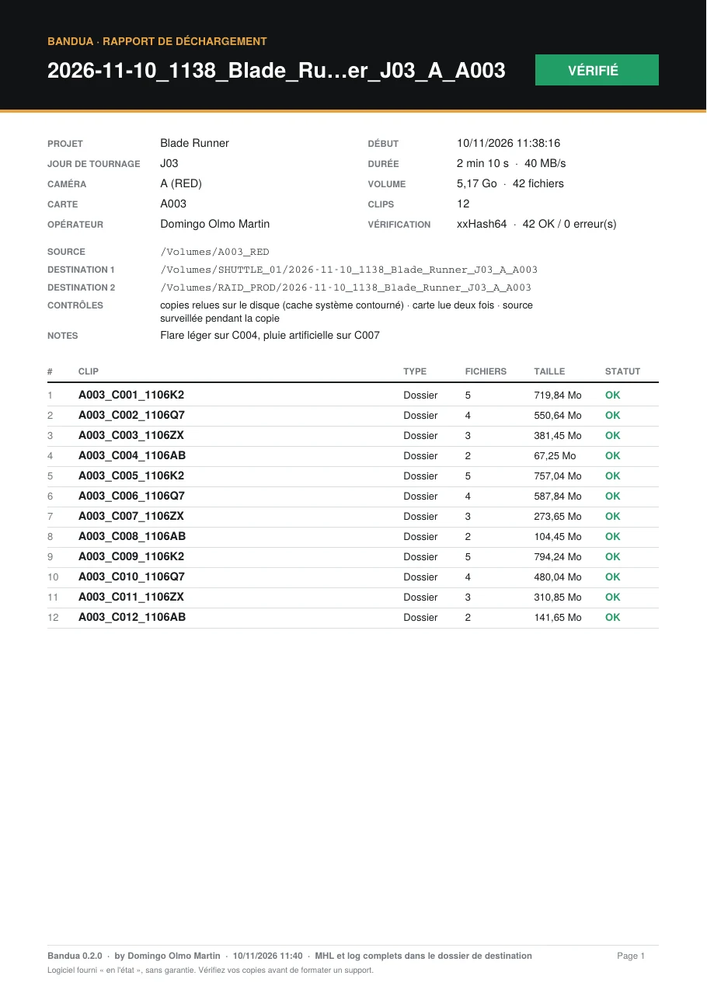
7. Re-vérifier un dossier avec son MHL
Cette fonction sert à contrôler qu'un dossier déjà copié est toujours intact :
- avant de formater une carte, si la copie date un peu ;
- au moment de livrer un disque au monteur ou au labo ;
- à la réception d'un disque, ou après un transport.
Procédure :
1. Cliquez sur Re-vérifier un MHL dans la barre du haut.
2. Choisissez le fichier .mhl du dossier daté.
3. Bandua relit chaque fichier et le compare au hash enregistré dans le MHL. Vous retrouvez le même tableau de bord que pour un déchargement (progression, débit, statut de chaque clip). Vous pouvez annuler à tout moment.
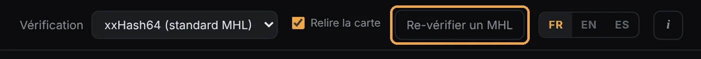
Statuts possibles :
- VÉRIFIÉ : fichier identique au MHL ;
- ABÎMÉ : le hash diffère, le fichier a changé ou s'est corrompu ;
- MANQUANT : le fichier listé dans le MHL n'existe plus.
Résultat :
- ✓ DOSSIER INTACT : tous les fichiers sont identiques au MHL ;
- sinon, le clip en cause est marqué (1) et un bandeau rouge (2) indique le nombre de fichiers manquants et abîmés, avec un rappel : ne formatez pas la carte d'origine.
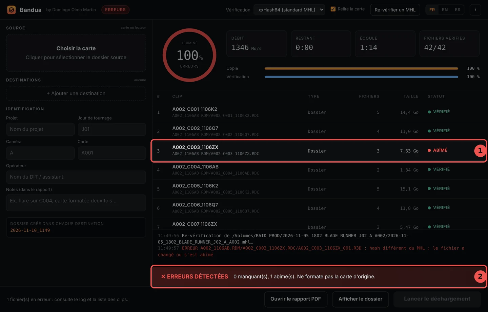
Les fichiers présents dans le dossier mais absents du MHL (ajoutés après coup) sont signalés dans le log, mais ne sont pas vérifiés.
Bandua écrit à côté du MHL un rapport PDF et un log de re-vérification, horodatés, par exemple <dossier>_reverification_2026-11-10_143012.pdf. Le MHL d'origine n'est jamais modifié.
Contrôler un MHL avec Bandua MHL Companion
Les personnes qui reçoivent les rushes (monteur, assistant de montage, labo, production) n'ont pas besoin de Bandua pour contrôler un MHL. Elles peuvent utiliser Bandua MHL Companion, une application gratuite, plus simple, conçue uniquement pour cela.
Il suffit de déposer le dossier des rushes sur sa fenêtre : elle trouve tous les MHL qu'il contient, relit chaque fichier et le compare au hash enregistré. Elle indique clairement si les rushes sont intacts ou quel clip pose problème, et peut exporter un rapport texte à renvoyer à la production ou au DIT. Elle lit les MHL de Bandua, mais aussi ceux de Silverstack, ShotPut Pro, Hedge et des autres logiciels (MHL 1.1 et ASC MHL). Elle est en lecture seule : elle ne copie rien et ne modifie aucun fichier.
Bandua MHL Companion est disponible pour Windows et macOS sur la page des Releases de son dépôt GitHub.
8. Annulation et erreurs
Annuler
Cliquez sur Annuler, puis sur Confirmer l'annulation dans les trois secondes (deux clics, pour éviter une annulation accidentelle). Bandua s'arrête proprement et ne laisse aucun fichier .bandua-part derrière lui. Le bandeau ✕ ANNULÉ rappelle de ne pas formater la carte.
En cas d'erreur
Ce que vous voyez
Ce que cela veut dire
Que faire
Clip en ERREUR, fichier .HASH_ERREUR sur la destination
La copie ne correspond pas à la source, ou les deux lectures de la carte diffèrent.
Lire le log. Essayer un autre lecteur ou un autre câble, puis Relancer cette carte.
« La carte a changé pendant le déchargement »
Un fichier a été modifié, ajouté ou supprimé sur la carte pendant l'opération.
Ne pas formater. Vérifier qu'aucun autre logiciel n'accède à la carte, puis relancer.
ESPACE INSUFFISANT sur une destination
La carte ne rentre pas sur ce disque.
Libérer de la place ou choisir un autre disque. Bandua refuse de démarrer tant que le problème n'est pas réglé.
« Lecture impossible » sur la source
La carte ou le lecteur ne répond pas.
Réinsérer la carte, changer de lecteur.
Le bouton Relancer cette carte reprend la même carte avec les mêmes réglages. Un nouveau dossier est créé (avec un suffixe _2 si nécessaire), et les copies défectueuses restent identifiables par leur extension .HASH_ERREUR.
9. Bonnes pratiques de plateau
Toujours deux copies minimum, sur deux disques physiquement différents.
Attendre le cercle vert et la mention « Vérifié » avant d'éjecter, et a fortiori avant de formater.
Formater la carte dans la caméra, jamais sur l'ordinateur.
Garder « Relire la carte » cochée : la plupart des pertes viennent d'un lecteur ou d'un câble défaillant, pas de la carte elle-même.
Remplir les notes : incidents, carte formatée deux fois, clip coupé… Le monteur vous en sera reconnaissant.
Re-vérifier avec le MHL avant de livrer un disque.
Ne lancer aucun autre logiciel sur la carte pendant le déchargement (navigateur de médias, logiciel de montage…).
10. Questions fréquentes
Combien de temps cela prend-il ?
Le temps de lecture de la carte, plus la vérification. Avec « Relire la carte », comptez à peu près une lecture de carte de plus. Le facteur limitant est généralement le lecteur de cartes ou le disque le plus lent.
Puis-je utiliser Bandua avec une caméra non listée ?
Oui. Toute carte est copiée intégralement. Seul le regroupement en clips du rapport sera plus sommaire (« Générique »).
Mon monteur utilise Silverstack, ShotPut ou Hedge. Peut-il lire mes MHL ?
Oui, le MHL 1.1 avec xxHash64 est le standard que ces logiciels lisent. Il peut aussi utiliser Bandua MHL Companion, gratuit.
Bandua fonctionne-t-il sous Linux ?
Pas pour l'instant. Le code reste compatible, mais la version Linux n'est pas proposée tant qu'elle ne peut pas être testée.
Bandua envoie-t-il des données sur Internet ?
Non. Tout se passe sur votre ordinateur.
11. Avertissement et licence
Bandua est un outil d'aide à la copie et à la vérification de médias. Il ne remplace pas vos propres contrôles ni vos procédures de sauvegarde. Le logiciel est fourni « en l'état », sans aucune garantie. L'auteur ne saurait être tenu responsable de toute perte, corruption ou suppression de données, rushes ou supports, ni de tout dommage direct ou indirect résultant de l'utilisation, d'une mauvaise utilisation ou d'un dysfonctionnement du logiciel.
Ne formatez ni ne réutilisez jamais une carte avant d'avoir vérifié que chaque copie est complète et lisible.
Bandua vuelca tus tarjetas de cámara a uno o varios discos a la vez. Verifica cada copia frente al origen mediante un hash. Después genera un informe PDF, un log, un archivo MHL y un archivo JSON, para entregar al montador, a producción o al laboratorio.
La regla es sencilla: nunca se formatea una tarjeta fiándose de una barra de progreso. Bandua solo declara una tarjeta «verificada» cuando cada archivo se ha releído desde cada disco de destino y se ha comparado con el original.
Bandua es gratuito, de código abierto (licencia MIT) y no pide ni cuenta ni licencia.
La app aún no está firmada, así que tu sistema muestra un aviso, una sola vez:
Windows: haz clic en «Más información» y luego en «Ejecutar de todas formas».
macOS: haz clic derecho en la app, elige «Abrir» y confirma.
Puede que el navegador también marque la descarga como poco habitual. Es normal en una app reciente y sin firmar. Conserva el archivo desde el panel de descargas. Si tienes dudas, analízalo en VirusTotal.
Ventana de bienvenida
En el primer arranque, Bandua muestra un aviso de exención de responsabilidad (1). Léelo y haz clic en Lo he entendido y acepto (2). Lo encontrarás después en Acerca de (el botón i).
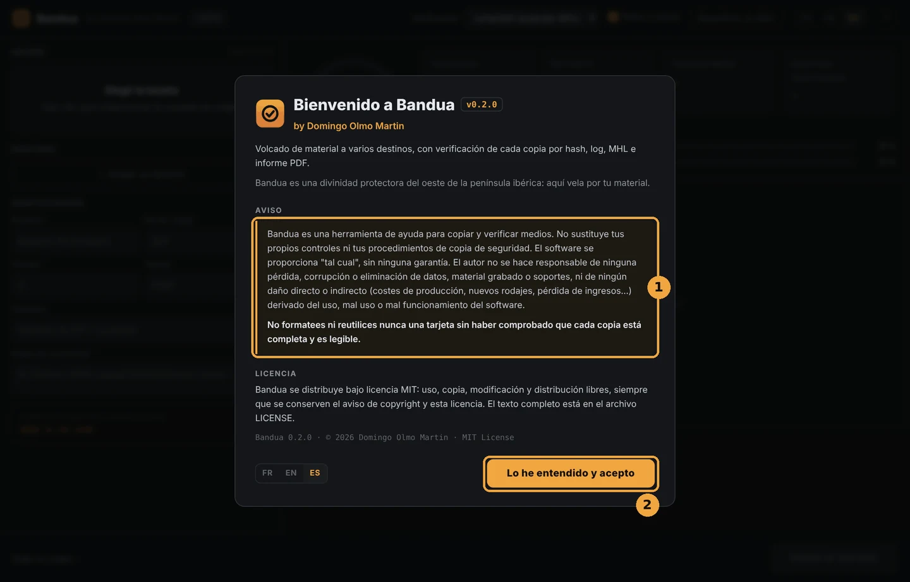
3. La interfaz de un vistazo
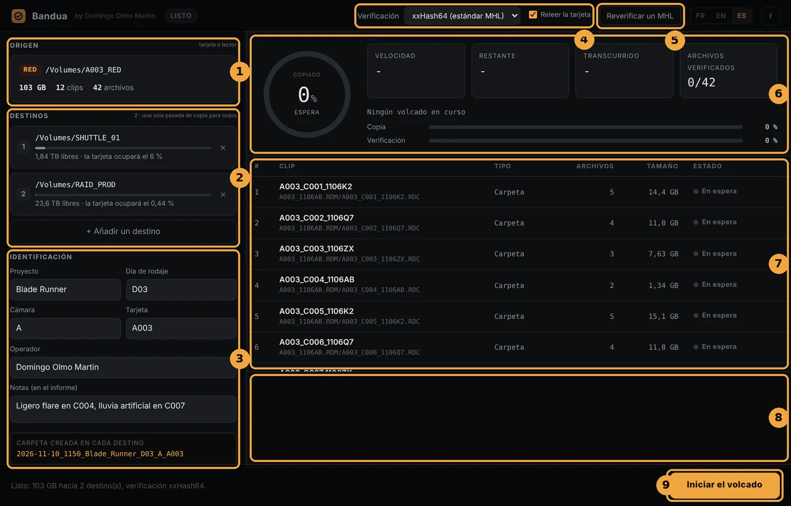
Origen: la tarjeta que se va a volcar, con su marca, su tamaño y su número de clips y archivos.
Destinos: los discos que recibirán una copia, con su espacio libre.
Identificación: proyecto, día de rodaje, cámara, tarjeta, operador, notas, y la vista previa del nombre de la carpeta que se creará.
Verificación: el algoritmo de hash y la casilla Releer la tarjeta.
Reverificar un MHL: el control de una carpeta ya copiada (ver la sección 7).
Panel: el círculo de progreso, los contadores (Velocidad, Restante, Transcurrido, Archivos verificados), el archivo en curso y las barras de copia y verificación.
Lista de clips de la tarjeta, con el estado de cada uno.
Log: el registro en directo.
Botón principal: Iniciar el volcado, luego Cancelar, luego Nuevo volcado o Reintentar esta tarjeta. A su izquierda, un mensaje resume el estado.
Arriba, la etiqueta junto al nombre de la app indica el estado: Listo, Copiando, Verificando, Verificado, Errores, Cancelado. Los botones FR / EN / ES cambian el idioma de la interfaz al instante.
4. Volcar una tarjeta, paso a paso
Paso 1: elegir el origen
Haz clic en el recuadro Origen («Elegir la tarjeta») y selecciona la tarjeta, o la carpeta que la representa.
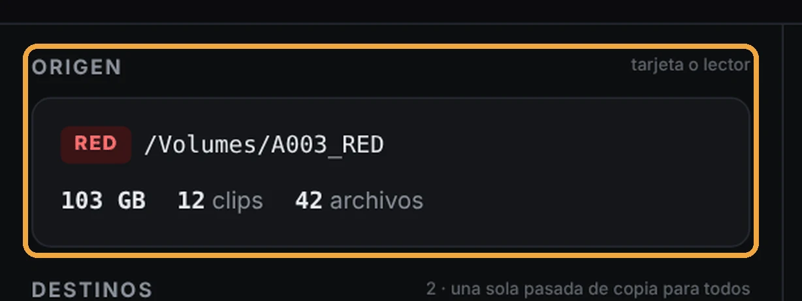
Bandua analiza la tarjeta y muestra:
- la marca reconocida (RED, ARRI, Blackmagic, Sony, Canon, GoPro, DJI, o «Générique» para el resto);
- el número de clips y archivos, y el tamaño total;
- la lista de clips en la tabla de la derecha, en estado En espera.
Si no se reconoce ningún clip de vídeo, Bandua lo indica, pero copia igualmente todos los archivos de la tarjeta.
Paso 2: añadir los destinos
Haz clic en + Añadir un destino (2) y elige una carpeta en tu primer disco. Repite para cada copia que necesites (normalmente dos discos, a veces tres).
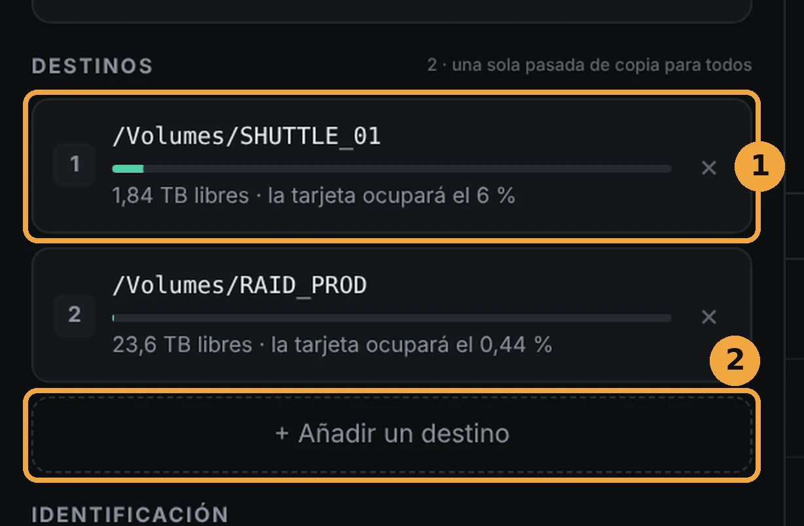
Para cada destino (1), Bandua muestra:
- el espacio libre y la parte que ocupará la tarjeta;
- un indicador verde, que pasa a rojo con ESPACIO INSUFICIENTE si la tarjeta no cabe.
La tarjeta se lee una sola vez para alimentar todos los destinos. Añadir discos no multiplica el tiempo de lectura de la tarjeta.
Para quitar un destino, haz clic en la cruz de su derecha. Bandua rechaza un destino igual al origen, o una carpeta ya elegida.
Paso 3: identificar la tarjeta
Rellena la sección Identificación:
Campo
Ejemplo
Nota
Proyecto
Blade Runner
se conserva de una sesión a otra
Día de rodaje
D03
se conserva
Cámara
A
se conserva; se rellena solo si está vacío
Tarjeta
A003
se rellena solo a partir de los nombres de los clips
Operador
nombre del DIT o del ayudante
se conserva
Notas
«Ligero flare en C004, lluvia artificial en C007»
aparecen en el informe
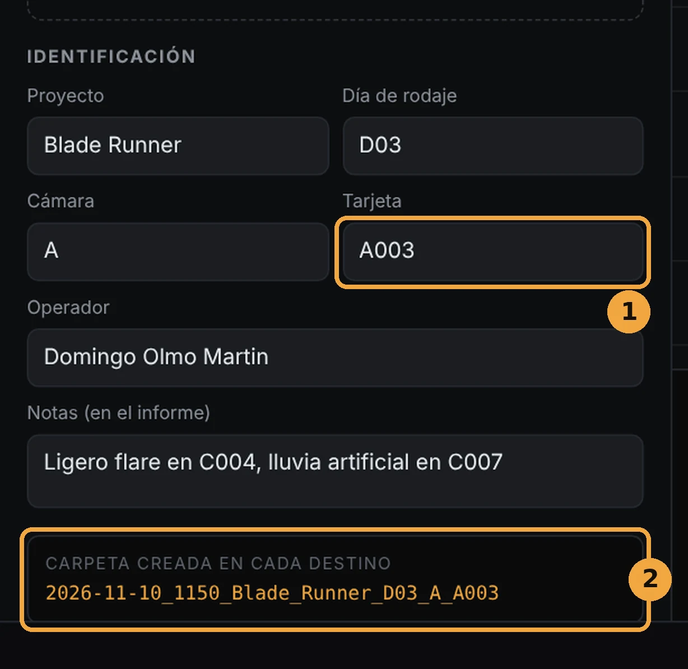
El número de tarjeta (1) se deduce de los nombres de los clips (por ejemplo A003_C001… da la tarjeta A003 y la cámara A). Compruébalo de todos modos.
Debajo de estos campos (2), Bandua muestra en directo el nombre de la carpeta que se creará en cada destino:
2026-11-10_1142_Blade_Runner_D03_A_A003
Es decir: fecha y hora de inicio, luego proyecto, día, cámara y tarjeta. Los campos vacíos simplemente se omiten. Si ya existe una carpeta con el mismo nombre, Bandua añade _2, _3, etc., y nunca sobrescribe nada.
Paso 4: ajustar la verificación (opcional)
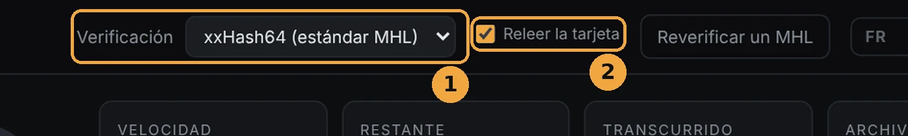
Algoritmo (1):
xxHash64 (estándar MHL): la opción por defecto, recomendada. Rápida, y reconocida por los programas de postproducción.
XXH3-64 (más rápido): aún más rápida en equipos recientes.
MD5 o SHA-1: más lentos, solo si un laboratorio o una producción los exige.
Releer la tarjeta (2): Bandua lee la tarjeta una segunda vez y compara las dos lecturas. Es más lento, pero detecta un lector de tarjetas, un cable o una tarjeta que fallan. Déjala marcada salvo urgencia real.
Paso 5: iniciar
El mensaje de abajo (1) resume la operación, por ejemplo: «Listo: 103 GB hacia 2 destino(s), verificación xxHash64.» Haz clic en Iniciar el volcado (2).
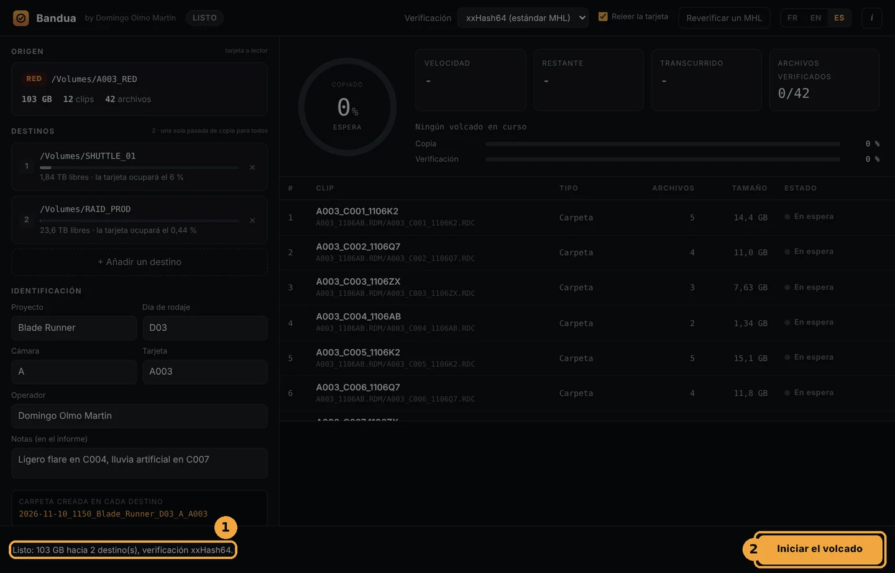
Durante el volcado, no retires ni la tarjeta ni los discos.
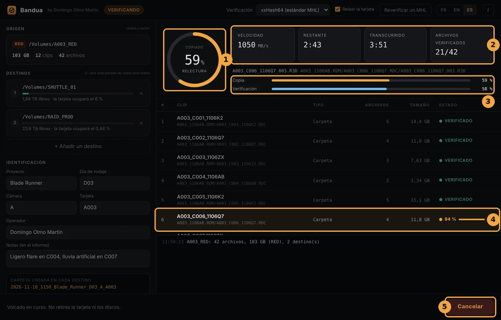
El círculo indica la parte de la tarjeta ya copiada (como la barra naranja), con una palabra bajo el porcentaje: copia, relectura, verificación y luego espere durante los últimos controles.
Los contadores dan la velocidad, el tiempo restante, el tiempo transcurrido y el número de archivos verificados.
Las barras siguen por separado la copia y la verificación.
El clip en curso aparece resaltado, con su propio progreso. Después, cada clip pasa a VERIFICADO (verde) o ERROR (rojo).
El botón pasa a Cancelar (ver la sección 8).
Paso 6: leer el resultado
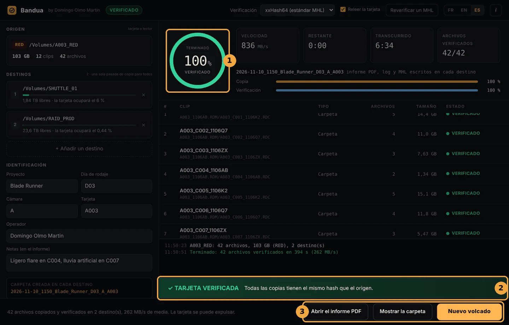
Todo está bien:
1. el círculo pasa a verde, con la palabra verificado; la etiqueta de arriba indica Verificado;
2. la franja ✓ TARJETA VERIFICADA aparece unos segundos: todas las copias tienen el mismo hash que el origen;
3. aparecen tres botones: Abrir el informe PDF, Mostrar la carpeta y Nuevo volcado.
El mensaje de abajo confirma el número de archivos y destinos y la velocidad media, e indica que la tarjeta se puede expulsar. Un clic en un destino abre directamente la carpeta copiada en ese disco.
Algo ha fallado: el círculo pasa a rojo y aparece la franja ✕ ERRORES DETECTADOS. Consulta el log y la lista de clips antes de tocar la tarjeta, y no la formatees. Ver la sección 8.
Paso 7: tarjeta siguiente
Haz clic en Nuevo volcado. Los destinos y los datos del proyecto (proyecto, día, cámara, operador) se conservan. Solo se vacían la tarjeta y las notas. Solo queda elegir la tarjeta siguiente.
5. Lo que hace Bandua durante la copia
Todo esto ocurre en segundo plano, sin que tengas que ajustar nada. Es lo que permite fiarse del círculo verde.
Copia segura. Cada archivo se escribe primero con un nombre temporal (.bandua-part). Solo recibe su nombre real una vez verificado. Un archivo con su nombre definitivo es, por tanto, un archivo controlado.
Verificación en el disco, no en memoria. La copia se relee desde el disco de destino evitando la caché del sistema. Se verifica de verdad el disco, y no una copia que se ha quedado en la memoria RAM. Si un volumen no permite evitar la caché, el log y el PDF lo indican.
Tamaño controlado. Un archivo demasiado corto o demasiado largo se considera un error.
Doble lectura de la tarjeta (si Releer la tarjeta está marcada). Si las dos lecturas difieren, las copias afectadas se marcan .HASH_ERREUR.
Vigilancia de la tarjeta. El tamaño y la fecha de cada archivo se controlan antes y después de su copia, y al final se hace un nuevo inventario completo de la tarjeta. Un archivo que cambia, aparece o desaparece hace fallar el volcado. Así se evita formatear una tarjeta que todavía se estaba escribiendo, o que otro programa ha modificado.
Copia idéntica. Se respeta la estructura de carpetas de la tarjeta (RED .RDM / .RDC, ARRIRAW, MXF, ProRes, BRAW, etc.), y se conservan las fechas de modificación originales.
Archivos de sistema ignorados. Los archivos que añaden los ordenadores (.DS_Store, .Spotlight-V100, .Trashes, .fseventsd, System Volume Information, $RECYCLE.BIN, Thumbs.db, desktop.ini, archivos ._ de macOS) no se copian.
6. Los informes
En cada carpeta con fecha, en cada destino, Bandua escribe cuatro archivos, en el idioma de la interfaz:
Archivo
Uso
<carpeta>_informe.pdf (_report.pdf en inglés, _rapport.pdf en francés)
El documento que se entrega: proyecto, tarjeta, cámara, operador, notas, controles realizados, lista de clips con su estado, algoritmo, resultado.
<carpeta>_log.txt
El registro detallado, archivo por archivo, con los hash. Útil en caso de duda o de litigio.
<carpeta>.mhl
La lista de hash en formato MHL 1.1, legible por Silverstack, ShotPut Pro, Hedge… Es el archivo que permite reverificar la carpeta más adelante.
<carpeta>.json
La misma información en un formato que puede usar un script u otro programa.
En el informe, los clips se agrupan por marca: una carpeta .RDC de RED cuenta como un clip, una carpeta ARRIRAW como un clip, un .braw como un clip, etc.
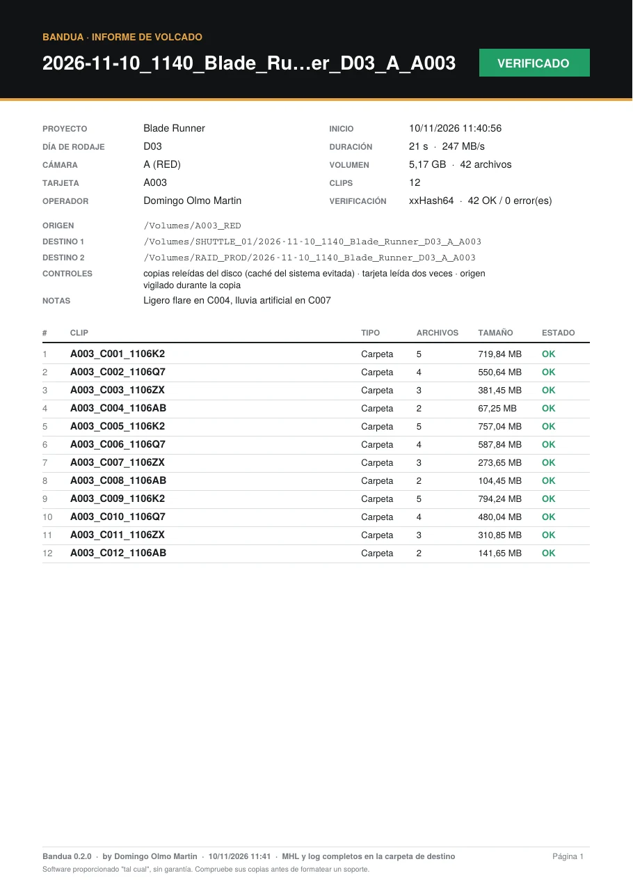
7. Reverificar una carpeta con su MHL
Esta función sirve para comprobar que una carpeta ya copiada sigue intacta:
- antes de formatear una tarjeta, si la copia no es reciente;
- al entregar un disco al montador o al laboratorio;
- al recibir un disco, o después de un transporte.
Procedimiento:
1. Haz clic en Reverificar un MHL en la barra superior.
2. Elige el archivo .mhl de la carpeta con fecha.
3. Bandua relee cada archivo y lo compara con el hash guardado en el MHL. Tienes el mismo panel que en un volcado (progreso, velocidad, estado de cada clip). Puedes cancelar en cualquier momento.
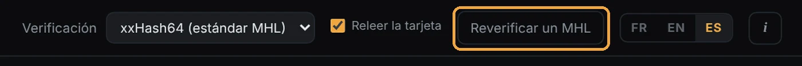
Estados posibles:
- VERIFICADO: el archivo es idéntico al MHL;
- DAÑADO: el hash es distinto, el archivo ha cambiado o se ha corrompido;
- FALTA: el archivo que figura en el MHL ya no existe.
Resultado:
- ✓ CARPETA INTACTA: todos los archivos son idénticos al MHL;
- si no, el clip afectado aparece marcado (1) y una franja roja (2) indica el número de archivos que faltan y dañados, con un recordatorio: no formatees la tarjeta original.
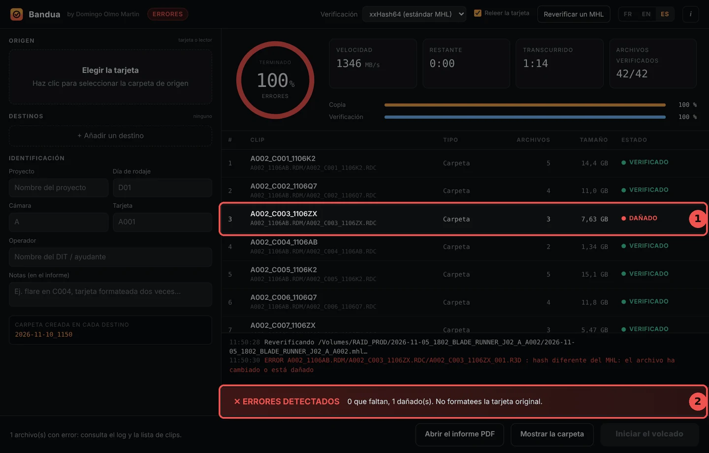
Los archivos presentes en la carpeta pero ausentes del MHL (añadidos después) se indican en el log, pero no se verifican.
Bandua escribe junto al MHL un informe PDF y un log de reverificación, con fecha y hora, por ejemplo <carpeta>_reverificacion_2026-11-10_143012.pdf. El MHL original nunca se modifica.
Controlar un MHL con Bandua MHL Companion
Quien recibe el material (montador, ayudante de montaje, laboratorio, producción) no necesita Bandua para controlar un MHL. Puede usar Bandua MHL Companion, una app gratuita y más sencilla, pensada solo para eso.
Basta con soltar la carpeta del material en su ventana: encuentra todos los MHL que contiene, relee cada archivo y lo compara con el hash guardado. Indica claramente si el material está intacto o qué clip da problemas, y puede exportar un informe de texto para enviarlo a producción o al DIT. Lee los MHL de Bandua, y también los de Silverstack, ShotPut Pro, Hedge y otros programas (MHL 1.1 y ASC MHL). Funciona en solo lectura: no copia nada y no modifica ningún archivo.
Bandua MHL Companion está disponible para Windows y macOS en la página de Releases de su repositorio de GitHub.
8. Cancelación y errores
Cancelar
Haz clic en Cancelar y luego en Confirmar la cancelación antes de tres segundos (dos clics, para evitar una cancelación accidental). Bandua se detiene limpiamente y no deja ningún archivo .bandua-part. La franja ✕ CANCELADO recuerda que no hay que formatear la tarjeta.
En caso de error
Lo que ves
Lo que significa
Qué hacer
Clip en ERROR, archivo .HASH_ERREUR en el destino
La copia no coincide con el origen, o las dos lecturas de la tarjeta difieren.
Leer el log. Probar con otro lector u otro cable, y luego Reintentar esta tarjeta.
«La tarjeta cambió durante el volcado»
Se modificó, añadió o borró un archivo de la tarjeta durante la operación.
No formatear. Comprobar que ningún otro programa accede a la tarjeta, y volver a lanzarla.
ESPACIO INSUFICIENTE en un destino
La tarjeta no cabe en ese disco.
Liberar espacio o elegir otro disco. Bandua no arranca hasta que se resuelva.
«Lectura imposible» en el origen
La tarjeta o el lector no responden.
Volver a insertar la tarjeta, cambiar de lector.
El botón Reintentar esta tarjeta vuelve a lanzar la misma tarjeta con los mismos ajustes. Se crea una carpeta nueva (con el sufijo _2 si hace falta), y las copias defectuosas siguen siendo fáciles de identificar por su extensión .HASH_ERREUR.
9. Buenas prácticas en rodaje
Siempre dos copias como mínimo, en dos discos físicamente distintos.
Esperar al círculo verde y a «Verificado» antes de expulsar, y más aún antes de formatear.
Formatear la tarjeta en la cámara, nunca en el ordenador.
Dejar «Releer la tarjeta» marcada: la mayoría de las pérdidas vienen de un lector o un cable defectuoso, no de la propia tarjeta.
Rellenar las notas: incidencias, tarjeta formateada dos veces, clip cortado… El montador te lo agradecerá.
Reverificar con el MHL antes de entregar un disco.
No abrir la tarjeta con ningún otro programa durante el volcado (navegador de medios, programa de montaje…).
10. Preguntas frecuentes
¿Cuánto tarda?
El tiempo de lectura de la tarjeta, más la verificación. Con «Releer la tarjeta», cuenta aproximadamente una lectura de tarjeta más. El cuello de botella suele ser el lector de tarjetas o el disco más lento.
¿Puedo usar Bandua con una cámara que no está en la lista?
Sí. Todas las tarjetas se copian completas. Solo la agrupación en clips del informe será más simple (marcada «Générique»).
Mi montador usa Silverstack, ShotPut o Hedge. ¿Puede leer mis MHL?
Sí, el MHL 1.1 con xxHash64 es el estándar que leen esos programas. También puede usar Bandua MHL Companion, gratuito.
¿Bandua funciona en Linux?
Por ahora no. El código sigue siendo compatible, pero no hay versión para Linux mientras no se pueda probar.
¿Bandua envía datos por Internet?
No. Todo ocurre en tu ordenador.
11. Aviso y licencia
Bandua es una herramienta de ayuda para copiar y verificar medios. No sustituye tus propios controles ni tus procedimientos de copia de seguridad. El software se proporciona «tal cual», sin ninguna garantía. El autor no se hace responsable de ninguna pérdida, corrupción o eliminación de datos, material grabado o soportes, ni de ningún daño directo o indirecto derivado del uso, mal uso o mal funcionamiento del software.
No formatees ni reutilices nunca una tarjeta sin haber comprobado que cada copia está completa y es legible.